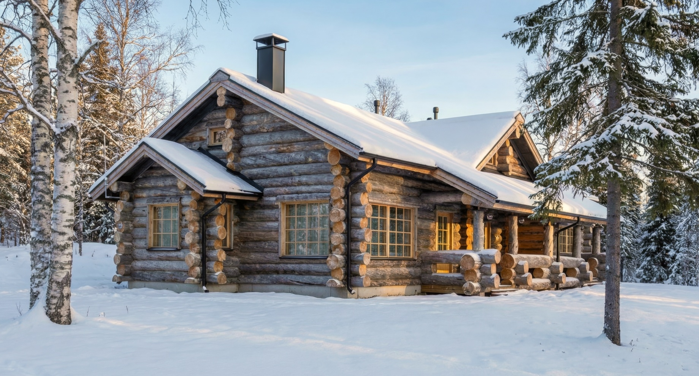
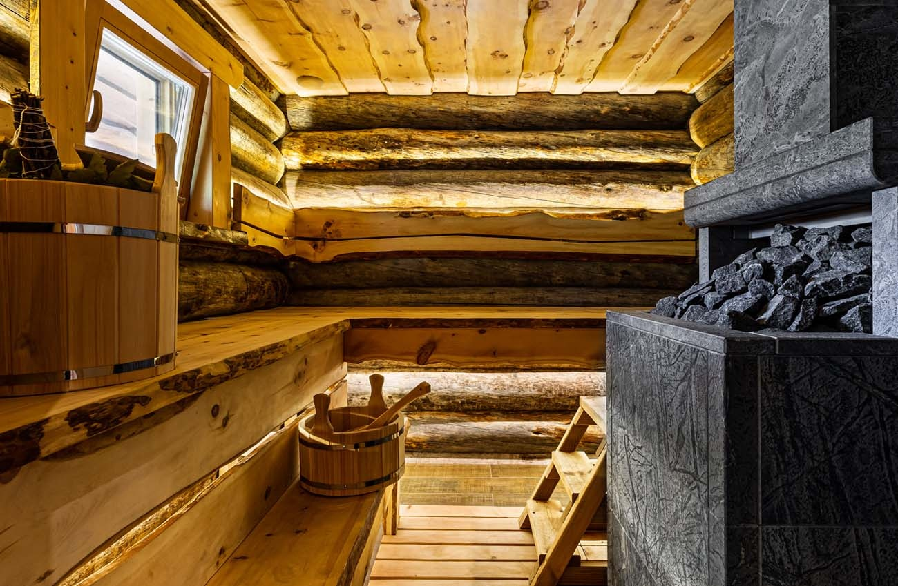

kelowood · Санкт-Петербург
Дом из кело.
С характером дерева.
Проектируем и строим дома и бани из сухостойной сосны кело. Офис в Санкт-Петербурге, строительство по России.
Посмотреть домаПРИМЕРЫ РЕШЕНИЙ
Дом снаружи.
Тепло внутри.
Посмотрите архитектуру, парную и детали сруба. Обсудим назначение, планировку и исполнение вашего дома или бани.

Дом из кело
kelowood · Санкт-Петербург
Дом из кело
Посмотрите архитектуру, парную и детали сруба. Обсудим назначение, планировку и исполнение вашего дома или бани.
Обсудить строительство